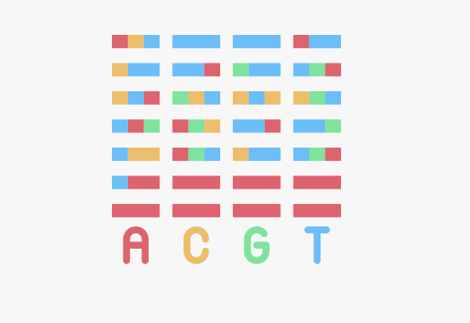

Project Overview
Combined Bash scripting for Linux data operations with bioinformatics pipelines for sequence analysis and consensus calling. Achieved automated, reproducible workflows for genomic datasets.
Tools & Technologies
- Bash & Linux scripting for automation
- Python (Biopython) for sequence analysis
- Pipeline design for reproducible bioinformatics workflows
- Data visualization & reporting
Project Preview
Gallery
